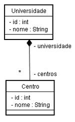
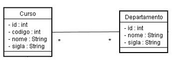
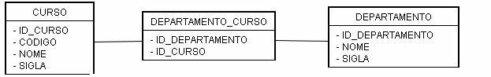

Informações
| Tipo: | Tutorial |
|---|---|
| Data de Publicação: | 03/11/2005 |
| Revisado em: | 03/11/2005 |
Vote!
Tags Relacionadas
Comentários ( 9 )
Imprimir
Mapeando Associações com Hibernate - Parte 1
por:
Raphaela Galhardo Fernandes (raphaela@jeebrasil.com.br)
Gleydson Lima (gleydson@jeebrasil.com.br)
Este tutorial apresenta os mapeamentos no Hibernate de relacionamentos entre entidades. Os mapeamentos apresentados são: 1-para-n, n-para-1 e n-para-n. O próximo tutorial consiste na segunda parte do tutorial sobre Associações, onde serão mapeadas associações n-para-n com atributos e 1-para-1.
Associações
O termo associação é utilizado para se referir aos relacionamentos entre as entidades. Os relacionamentos n-para-n, n-para-1 e 1-para-n são os mais comuns entre as entidades de um banco de dados.
Todos os exemplos apresentados nesta seção baseiam-se no diagrama de classes mostrado na Figura 1 do Tutorial "Primeiro Exemplo com Hibernate".
Associações 1-n (one-to-many)
Para exemplificar o relacionamento 1-n, considere o relacionamento entre a entidade Centro e a entidade Universidade da Figura 1. O relacionamento diz que uma universidade possui um conjunto de n centros e um centro está associado a apenas uma única universidade. Considere as classes de domínio Java de uma universidade e de um centro, respectivamente, mostradas nas Listagens 1 e 2.

Figura 1 - Relacionamento entre Centro e Universidade
package br.com.jeebrasil.dominio;
import java.util.Collection;
public class Universidade implements Serializable{
private int id;
private String nome;
private Endereco endereco;
private Collection centros;
//Implementação dos métodos setter e getter
...
}
Listagem 1 - Classe de Domínio: Universidade
package br.com.jeebrasil.dominio;
import java.util.Collection;
public class Centro implements Serializable{
private int id;
private String nome;
private Universidade universidade;
//departamentos -> Atributo mapeado das mesma forma que a
//coleção centros em Universidade
private Collection departamentos;
//Implementação dos métodos setter e getter
}
Listagem 2 - Classe de Domínio: Centro
A classe de domínio Universidade é a que possui um mapeamento do tipo 1-n. O seu mapeamento pode ser visto na Listagem 3. Neste momento, as informações do endereço da universidade foram desconsideradas.
...
<hibernate-mapping>
<class name="br.com.jeebrasil.dominio.Universidade"
table="UNIVERSIDADE">
<id name="id" column="ID_UNVERSIDADE" type="int">
<generator class="increment"/>
</id>
<property name="nome"/>
<!-- Mapeamento da Coleção de centros -->
<set name="centros" inverse="true" lazy="true">
<key column="ID_UNIVERSIDADE"/>
<one-to-many class="br.com.jeebrasil.dominio.Centro"/>
</set>
</class>
</hibernate-mapping>
Listagem 3 - Mapeamento 1-n: tabela universidade
Observa-se que para realizar o mapeamento 1-n, ou seja, da coleção centros foi utilizada uma tag set. Um set ou um conjunto representa uma coleção de objetos não repetidos que podem ou não estar ordenados. O atributo name define a propriedade que está sendo tratada para realizar o relacionamento 1-n. O atributo key representa a coluna da tabela relacionada (Centro) que possui a chave estrangeira para a classe Universidade. O nome da coluna da chave estrangeira (ID_UNIVERSIDADE) é informado no atributo column. Na tag <one-to-many> informa-se a classe a qual pertence à coleção de objetos, no caso br.com.jeebrasil.dominio.Centro.
A tag set também apresenta um atributo denominado inverse. Esse atributo é utilizado para que o Hibernate saiba como tratar a associação entre duas tabelas. Quando um lado da associação define o atributo inverse como true, indica que a ligação do relacionamento entre a associação será de responsabilidade do "outro lado" da associação.
Considerando o relacionamento entre uma universidade e seus centros, no mapeamento do conjunto de centros em universidade, o atributo inverse é igual a true. Dessa forma, a criação ou atualização do relacionamento entre um centro e uma universidade será feita durante a persistência ou atualização de um objeto Centro.
A partir do exemplo apresentado na Listagem 4, cria-se uma instância da classe Universidade e define-se um valor para o atributo nome. Em seguida, uma instância da classe Centro também é criada, definindo o atributo nome e o atributo universidade (como sendo a instância de Universidade anteriormente criada). Por fim, o objeto Centro criado é adicionado à coleção de centros do objeto Universidade, o qual é persistido.
...
Universidade univ = new Universidade()
univ.setNome("Universidade Federal do Rio Grande do Norte");
Centro centro = new Centro();
centro.setNome("Centro de Tecnologia");
centro.setUniversidade(univ);
univ.setCentros(new HashSet());
univ.getCentros().add(centro);
session.save(univ);
...
Listagem 4 - Exemplificando uso do atributo inverse
A Listagem 5 apresenta o que acontece se o atributo inverse no mapeamento 1-n for definido como false. O que acontece é que o Hibernate insere uma linha na tabela UNIVERSIDADE e em seguida tenta atualizar o relacionamento entre uma universidade e um centro, no caso a partir de um UPDATE na tabela CENTRO, setando a chave estrangeira para a tabela UNIVERSIDADE.
Hibernate: insert into UNIVERSIDADE (nome, ID_ENDERECO, ID_UNIVERSIDADE) values (?, ?, ?) Hibernate: update CENTRO set ID_UNIVERSIDADE=? where ID_CENTRO=?
Listagem 5 – SQL gerado pelo Hibernate com atributo inverse=false
Verifica-se, então, que com o atributo inverse sendo igual a false, o Hibernate tenta atualizar o relacionamento entre uma universidade e um centro logo após a inserção da universidade. Neste caso, como o relacionamento com a universidade está sendo feito com um objeto transiente de um Centro, o que vai ocorrer é que o Hibernate vai tentar atualizar a chave estrangeira para a tabela UNIVERSIDADE em uma linha da tabela CENTRO que não existe, acontecendo o erro exibido na Listagem 6.
ERRO: Exception in thread "main" org.hibernate.TransientObjectException: object references an unsaved transient instance - save the transient instance before flushing: br.com.jeebrasil.dominio.Centro ...
Listagem 6 – Erro gerado após teste com o atributo inverse=false no relacionamento 1-n em Universidade
De acordo com o mapeamento da Listagem 3, o atributo inverse é definido como true. Então, para o código da Listagem 4 vai ser gerado o SQL exibido na Listagem 7. Neste caso, veja que apenas é dado um INSERT na tabela UNIVERSIDADE, ou seja, no momento da inserção de uma universidade o Hibernate não atualiza o relacionamento entre ela e seus centros, pois espera que ele seja feito no momento da inserção/atualização de um objeto Centro.
Hibernate: insert into UNIVERSIDADE (nome, ID_ENDERECO, ID_UNIVERSIDADE) values (?, ?, ?)
Listagem 7 - SQL gerado pelo Hibernate com atributo inverse=true
Resumindo, se o atributo inverse não for definido como true, o Hibernate não tem como saber qual dos dois lados foi atualizado, ou seja, vai sempre atualizar os dois lados de uma vez, uma atualização para cada classe da relação, o que seria desnecessário. Caso contrário, o Hibernate passa a saber de qual lado fazer a atualização e fazendo uma única vez.
Na tag set também está presente o atributo lazy. Ele é utilizado para resolver o seguinte problema: quando se realiza um select em um objeto Universidade implica em serem feitos n (número de centros da universidade) outros select’s para buscar os seus centros. Dessa forma, a resolução do problema é feita apenas definindo o atributo lazy como sendo true. A coleção de centros passa a ser lazy-loading, o que significa que somente será recuperada quando solicitada, ou seja, a coleção de centros de uma universidade só seria solicitada caso o programador a acesse através da chamada ao método getCentros().
Associações n-1 (many-to-one)
O relacionamento n-1 será apresentado a partir do relacionamento <many-to-one> existente entre a tabela Centro e a tabela Universidade. Neste caso, o relacionamento está presente no mapeamento da classe Centro, como mostrado na Listagem 8.
...
<hibernate-mapping>
<class name="br.com.jeebrasil.dominio.Centro"
table="CENTRO">
<id name="id" column="ID_CENTRO" type="int">
<generator class="increment"/>
</id>
<property name="nome" type="java.lang.String"/>
<!-- Mapeamento da Universidade -->
<many-to-one name="universidade"
class="br.jeebrasil.dominio.Universidade" cascade="none"
fech="join" update="true" insert="true" lazy="true"
column="id_universidade"/>
<set name="departamentos" lazy="true" inverse="true">
<key column="ID_CENTRO"/>
<one-to-many class="br.com.jeebrasil.dominio.Departamento"/>
</set>
</class>
</hibernate-mapping>
Listagem 8 - Mapeamento n-1: tabela centro
Como mostrado no mapeamento da classe Centro, o relacionamento n-1 é mapeado a partir da tag <many-to-one>. Essa tag apresenta um conjunto de atributos, que podem assumir os valores apresentados na Listagem 9.
<many-to-one name="propertyName"
class="ClassName" column="column_name"
fetch="join|select" update="true|false" lazy="true|false"
insert="true|false" cascade="all|none|save-update|delete"
/>
Listagem 9 – Mapeamento n-1: atributos
- name: nome do atributo na classe Java;
- column: coluna do banco de dados. É uma chave estrangeira;
- class: nome da classe Java da entidade relacionada;
- insert e update: indica se o atributo será incluído e alterado ou somente lido;
- cascade: indica com que ação em cascata o relacionamento será tratado.
- none: associação é ignorada;
- save-update:os objetos associados vão ser inseridos ou atualizados automaticamente quando o objeto "pai" for inserido ou atualizado;
- delete: os objetos associados ao objeto "pai" vão ser deletados;
- all: junção de delete e save-update;
- all-delete-orphan: o mesmo que all, mas o Hibernate deleta qualquer objeto que tiver sido retirado da associação;
- delete-orphan: se o objeto não fizer mais parte da associação, ele removido.
- fetch: se definido como join é usado para realizar joins sem restrição de nulidade (outer-join). Se for select, um novo select é feito para recuperar a informação da associação.
- lazy: se igual a true, o objeto só será recuperado se solicitado; se igual a false, o objeto sempre será recuperado.
Associações n-n (many-to-many)
O relacionamento n-n será feito a partir do relacionamento entre as entidades Departamento e Curso mostrado na Figura 2.

Figura 2 - Relacionamento n-n entre Curso e Departamento
Um relacionamento n-n implica em existir uma nova tabela para mapear o relacionamento no banco de dados. Vamos denominar essa nova tabela como DEPARTAMENTO_CURSO, como mostrado na Figura 3. Dessa forma, um departamento possui uma coleção de cursos e um curso uma coleção de departamentos. A existência dessas coleções é opcional. Por exemplo, pode ser que em um sistema real não seja necessário saber todos os departamentos de determinado curso, mas se for realmente necessário, o Hibernate apresenta outros mecanismos para a obtenção desta informação.

Figura 3 - Tabela de relacionamento DEPARTAMENTO_CURSO
As classes Java das entidades Departamento e Curso estão ilustradas nas Listagens 10 e 11, respectivamente.
package br.com.jeebrasil.dominio;
import java.util.Collection;
public class Departamento implements Serializable{
private int id;
private String nome;
private String sigla;
private Centro centro;
private Collection professores;
private Collection cursos;
// Implementação dos métodos setter e getter
}
Listagem 10 - Classe de Domínio: Departamento
package br.com.jeebrasil.dominio;
import java.util.Collection;
public class Curso implements Serializable{
private int id;
private int codigo;
private String nome;
private String sigla;
private Collection departamentos;
private Collection alunos;
//Implementação dos métodos setter e getter
}
Listagem 11 - Classe de Domínio: Curso
A Listagem 12 apresenta o mapeamento da classe Departamento. Já a Listagem 13, o mapeamento da classe Curso.
...
<hibernate-mapping>
<class name="br.com.jeebrasil.dominio.Departamento"
table="DEPARTAMENTO">
<id name="id" column="ID_DEPARTAMENTO" type="int">
<generator class="increment"/>
</id>
<property name="nome" type="java.lang.String"/>
<property name="sigla" type="java.lang.String
<many-to-one name="centro"
class="br.com.jeebrasil.dominio.Centro"
column="ID_CENTRO"
cascade="save-update"/>
<set name="professores">
<key column="ID_DEPARTAMENTO"/>
<one-to-many class="br.com.jeebrasil.dominio.Professor"/>
</set>
<!-- Mapeamento dos cursos -->
<set name="cursos" table="DEPARTAMENTO_CURSO"
inverse="true">
<key column="ID_DEPARTAMENTO"/>
<many-to-many column="ID_CURSO"
class="br.com.jeebrasil.dominio.Curso"/>
</set>
</class>
</hibernate-mapping>
Listagem 12 - Departamento.hbm.xml
...
<hibernate-mapping>
<class name="br.com.jeebrasil.dominio.Curso" table="CURSO">
<id name="id" column="ID_CURSO" type="int">
<generator class="increment"/>
</id>
<property name="codigo"/>
<property name="nome"/>
<property name="sigla"/>
<set name="alunos">
<key column="ID_CURSO"/>
<one-to-many class="br.com.jeebrasil.dominio.Aluno"/>
</set>
<!-- Mapeamento dos departamentos-->
<set name="departamentos" table="DEPARTAMENTO_CURSO">
<key column="ID_CURSO"/>
<many-to-many column="ID_DEPARTAMENTO"
class="br.com.jeebrasil.dominio.Departamento"/>
</set>
</class>
</hibernate-mapping>
Listagem 13 - Curso.hbm.xml
Observa-se que tanto no mapeamento da coleção cursos em Departamento quanto no da coleção departamentos em Curso, o relacionamento n-n é feito a partir de uma tag set. Os mapeamentos das duas coleções apresentam uma tag key, na qual o atributo column indica a chave estrangeira do pai na tabela de relacionamento DEPARTAMENTO_CURSO. Apresentam também a tag many-to-many utilizada para indicar a entidade filha e sua chave estrangeira no relacionamento. A única diferença entre o mapeamento das duas coleções é que na tag set de cursos no mapeamento da entidade Departamento o atributo inverse é igual a true, significando que na tabela DEPARTAMENTO_CURSO só será inserido o relacionamento entre as duas entidades, quando um curso for inserido no banco de dados associado a um departamento.
Neste caso, não seria necessário mapear a coleção de cursos em Departamento, pois não está sendo utilizada para popular a tabela de relacionamento. Como já citado, para recuperar a coleção de cursos de um departamento, o Hibernate apresenta outros mecanismos.
Em outros relacionamentos n-n, pode ser que seja necessário inserir/atualizar o relacionamento na tabela de relacionamento durante a inserção/atualização de qualquer um dos lados das entidades, portanto, basta que o atributo inverse nas duas coleções seja mapeado como false.
O código presente na Listagem 14 cria um instância de um objeto Departamento. Em seguida recupera um objeto persistente da classe Curso com identificador igual a 1, adiciona esse objeto Curso na coleção de cursos do objeto Departamento criado e, por fim, persiste o departamento. O SQL gerado é apresentado na Listagem 15. Observa-se que apenas um SELECT na tabela CURSO é feito e um INSERT na tabela DEPARTAMENTO. Não há uma inclusão de linha na tabela de relacionamento DEPARTAMENTO_CURSO, pois o atributo inverse da coleção de cursos no mapeamento da classe Departamento foi definido como true.
Departamento depart = new Departamento();
depart.setNome("Departamento 1");
Curso curso = (Curso)session.get(Curso.class, 1);
depart.getCursos().add(curso);
session.save(depart);
Listagem 14 - Persistência de Departamento
Hibernate: select curso0_.ID_CURSO as ID1_0_, curso0_.codigo as codigo1_0_, curso0_.nome as nome1_0_, curso0_.sigla as sigla1_0_, curso0_.ID_COORDENADOR as ID5_1_0_ from CURSO curso0_ where curso0_.ID_CURSO=? Hibernate: insert into DEPARTAMENTO (nome, sigla, ID_CENTRO, ID_CHEFE, ID_DEPARTAMENTO) values (?, ?, ?, ?, ?)
Listagem 15 - SQL para comandos da Tabela 14
Já o código presente na Listagem 16, cria uma instância da classe Curso, busca o objeto persistente Departamento de identificador 1 na base de dados, adiciona o departamento a coleção de departamentos do objeto Curso e realiza a a sua persistência. O SQL presente na Listagem 17 mostra que um SELECT foi feito na tabela DEPARTAMENTO, um INSERT na tabela CURSO e um outro INSERT na tabela DEPARTAMENTO_CURSO. Nesse caso, o relacionamento foi persistido, pois no mapeamento da coleção departamentos da classe Curso, como o atributo inverse não foi definido como true, assume-se que ele é false.
Curso curso = new Curso(); Departamento d = (Departamento)session.get(Departamento.class, 1); curso.getDepartamentos().add(d); session.save(curso);
Listagem 16 - Persistência de Curso
Hibernate: select departamen0_.ID_DEPARTAMENTO as ID1_0_, departamen0_.nome as nome4_0_, departamen0_.sigla as sigla4_0_, departamen0_.ID_CENTRO as ID4_4_0_, departamen0_.ID_CHEFE as ID5_4_0_ from DEPARTAMENTO departamen0_ where departamen0_.ID_DEPARTAMENTO=? Hibernate: insert into CURSO (codigo, nome, sigla, ID_COORDENADOR, ID_CURSO) values (?, ?, ?, ?, ?) Hibernate: insert into DEPARTAMENTO_CURSO (ID_CURSO, ID_DEPARTAMENTO) values (?, ?)
Listagem 17 - SQL para comandos da Tabela 16
Conclusões
O mapeamento de relacionamentos entre entidades será freqüente ao se utilizar um framework de mapeamento objeto-relacional. De início, mapeá-los utilizando Hibernate pode parecer uma tarefa difícil e tediosa, porém nada melhor do que a prática para ver que esse poderoso framework ajudará bastante o desenvolvedor e possibilitará redução no tempo de desenvolvimento de uma aplicação. Pratique!
No próximo tutorial será apresentado o mapeamento do relacionamento 1-para-1 e do relacionamento n-para-n com atributos, onde também será apresentado o mapeamento de chaves compostas.
Referências
- Christian Bauer e Gavin King. Hibernate in Action. 2005.
- Grupo Hibernate. Hibernate Reference Documentation. Version 3.0.5. Obtido em http://www.hibernate.org
- Gleydson de Azevedo Ferreira Lima. Material Didático. 2005.
- Nick Heudecker. Introdução ao Hibernate.
- Maurício Linhares. Introdução ao Hibernate 3.
- Francesc Rosés Albiol. Introducción a Hibernate. 2003.
- Fabiano Kraemer, Jerônimo Jardel Vogt. Hibernate, um Robusto Framework de Persistência Objeto-Relacional. 2005.
Comentários (9)
- Ótimo
- postado por Aristides Vicente em 29/03/2007 às 23:21
- Muito bom mesmo, de verdade. Parabéns!!!
- postado por José Milton em 30/03/2007 às 23:21
- Sinceramente... sem comentários. Muito bom esses tutoriais sobre hibernate. Agora que estou no terceiro, mas estou ancioso para ler todos. Muito bom mesmo. Parabéns!!!
- postado por Marcio Correia em 10/04/2007 às 23:21
- Parabéns por este e pelos outros artigos sobre Hibernate. Eu vi vários artigos na web sobre Hibernate. Os artigos de vocês são bem didáticos!!
- postado por cleriston em 06/07/2007 às 23:21
- Aquele relacionamento da figura está correto mesmo? Não seria o contrário?
- postado por bigo em 31/10/2007 às 23:21
- ah nao... cabaciei
- postado por bigo em 31/10/2007 às 23:21
- Achei muito bom o artigo, porém não consegui visualizar como ficaria, em código, a inclusão de mais um departamento para um curso que já está incluso no banco. Não sei se vc me entendeu e até fico grato por um retorno, de qualquer forma o artigo é muito bom.
- postado por Robson em 11/11/2007 às 23:21
- Tentei rodar o exemplo acima e não funcionou.
- postado por Victor em 06/12/2007 às 23:21
- Google is the best search engine Google
- postado por sLKlVYCSTw em 15/02/2008 às 23:21